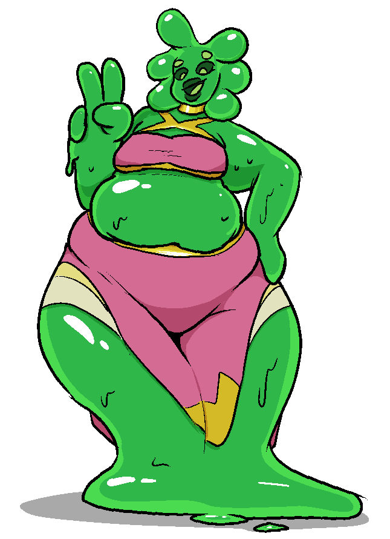

Uma
Uma | |
|---|---|
|  | |
| Full Name | Uma 'Slimebutt' |
| Pronouns | She/Her |
| Species | Gal'Sha |
| Age | 45 |
| Height | 218m / 7'2" |
| Occupation | Waitress |
| Relationships |
Aparna - Sister Darue - Partner |
| Menu Reccomendation | Redsand Beetle Crispers |
| Slime Scent | Green Apple |
Backstory
Uma and her sister Aparna were formed when another Gal'Sha split in two, becoming two new beings in the process. Uma inherited most of the previous slimes social tendencies, becoming deeply extroverted and friendly. Regardless, Uma struggled to find any real information about who the two of them had previously been, and initially struggled to get by. Despite this, she became well known in her sector of the Underground, being on good terms with most others.
While Gal'Sha can take any shape they please, Uma very quickly developed a fascination with humans. She sought to mimic their mannerisms, gradually learning to assume a humanoid form, despite its complexity.
She had a lucky break when the owner of the Aerial Roots Diner - an eatery in the Underground - met her, having been friends with her prior form. Her charisma landed her a job as a waitress at the restaurant, which gave her and her sister enough financial freedom to be more comfortable.
She eventually met Darue, and the two quickly hit it off, before pursuing a relationship together.
The owner was able to fill Uma in on some more info regarding her and her sister's prior form, but the two of them had stopped talking long before the actual split happened. To this day, Uma seeks answers as to who she used to be. Partially wondering if one day, she'll end up splitting too. Or, the alternative - playing her cards right, and taking advantage of her species' effective immortality, likely outliving everyone she knows. Despite her carefree exterior, the possibility of either frequently weighs heavily on her.
Character
Uma is outgoing, enthusiastic, and supportive of almost everyone. She's quick to try and befriend almost everyone she meets. She's the stranger who'd try and start a conversation on the bus, for better or worse.
Her social nature does wear some people out, and she has a hard time recognizing the limits of others in that regard, and others. Still, she always approaches interactions with good intentions and is quick to recognize when she's overstepped.
Uma is also a very aesthetically driven person - she spends a good chunk of time refining her form, trying to come as close to passing as human as she can. Gal'Sha tend to be large as a result of biological necessity, but Uma takes pride in her size, trying to pick out outfits and mannerisms that accentuate it. When given the chance, she loves spreading this enthusiasm to others, trying to help people find ways to present the best version of themselves.
Trivia
- Uma's last name comes from an inside joke that she accidentally wrote on some legal forms. An unexpected oversight caused it to become her and her sister's legal last name, much to Aparna's chagrin.
- Uma's eyes are solely for emoting - in terms of actual sight, she's blind, and relies on her other senses to navigate.
- Uma refuses to eat jello. Just feels too weird.
- Uma loves bad puns.